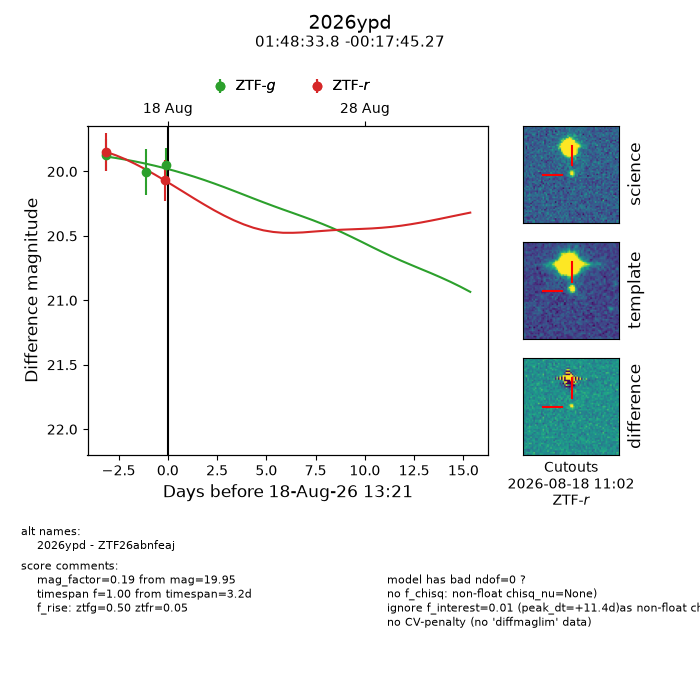
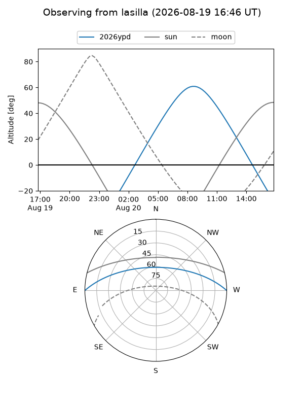
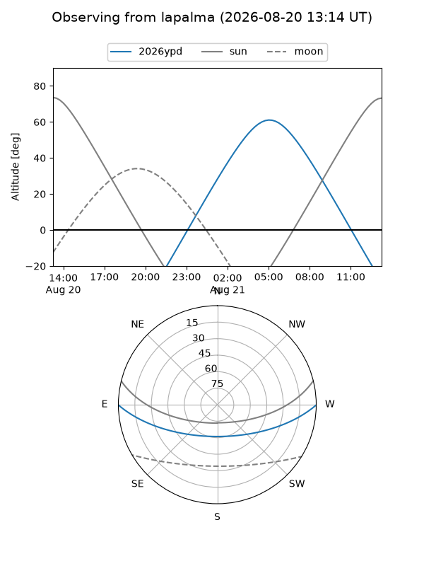
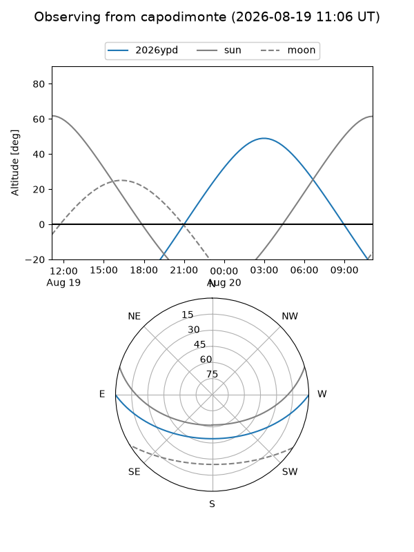
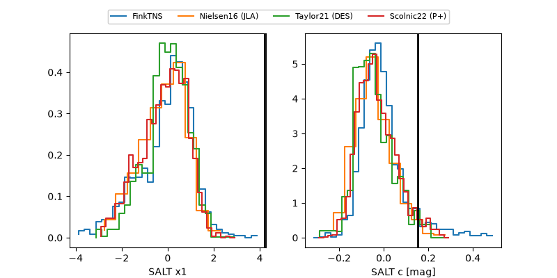

2026ypd
Target 2026ypd at 2026-08-18 13:25
Aliases and brokers:
FINK-ZTF: ztf.fink-portal.org/ZTF26abnfeaj
Lasair-ZTF: lasair-ztf.lsst.ac.uk/objects/ZTF26abnfeaj
ALeRCE-ZTF: alerce.online/object/ZTF26abnfeaj
YSE-PZ: ziggy.ucolick.org/yse/transient_detail/2026ypd
TNS name: wis-tns.org/object/2026ypd
Direct TNS query: direct search
alt names
ZTF26abnfeaj (ztf,fink_ztf)
2026ypd (tns,yse)
Coordinates:
equatorial (ra, dec) = 27.1410,-0.29591
equatorial (HMS+DMS) = 01:48:33.85,-00:17:45.27
galactic (l, b) = (152.3601,-59.86291)
Flags:
TNS type: nan
peak dt: +11.4
Photometry:
last ztfg=19.95, ztfr=20.07
3 ztfg, 2 ztfr detections
Lightcurve

Visibility



Additional plots
